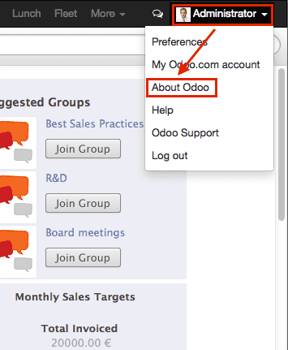

Note: this section is really really out of date. It will be updated someday, but meanwhile, this tutorial will probably be frustrating to follow, since it was written a long time ago.
Это руководство посвящено созданию модулей для веб-клиента Odoo.
Чтобы создать веб-сайты с помощью Odoo, см. Создание веб-сайта; того чтобы добавить новые бизнес возможности или расширить существующие в Odoo, см. Создание модуля.
Предупреждение
Данное руководство предполагает следующие знание:
Основы и рекомендации по использованию Javascript
jQuery
- Underscore.js
Так же требуетсяIt also requires установленная Odoo и Git.
Простой модуль
Начнем с простого модуля Odoo, содержащего базовую конфигурацию веб-компонентов и позволяющую протестировать веб-фреймворк.
Пример модуля доступен онлайн и может быть загружен с помощью следующей команды:
$ git clone http://github.com/odoo/petstore
Данное действие создаст папку petstore там где Вы выполнили команду. Далее необходимо добавить этот каталог в addons path, создать новую базу данных и установить модуль oepetstore.
Если вы просмотрите папку petstore, увидите следующие содержимое:
oepetstore
|-- images
| |-- alligator.jpg
| |-- ball.jpg
| |-- crazy_circle.jpg
| |-- fish.jpg
| `-- mice.jpg
|-- __init__.py
|-- oepetstore.message_of_the_day.csv
|-- __manifest__.py
|-- petstore_data.xml
|-- petstore.py
|-- petstore.xml
`-- static
`-- src
|-- css
| `-- petstore.css
|-- js
| `-- petstore.js
`-- xml
`-- petstore.xml
Модуль уже содержит некоторые изменения серверной части. Мы вернемся к ним позже, а пока давайте сосредоточимся на веб-содержимом в папке static.
Файлы используемые в "web" части Odoo модуля должны быть помещены в каталог static, для того, чтобы они стали доступны из веб-браузереа файлы, находящиеся вне этого каталога, не могут быть получены браузером напрямую. Подкаталоги src/css, src/js и src/xml не обязаны иметь строго аналогичные названия и имеют такие имена исключительно для удобства разработки.
oepetstore/static/css/petstore.cssпока пуст, будет содержать CSS для контента магазина для животных
oepetstore/static/xml/petstore.xmlТак же почти пуст, будет содержать Qweb шаблон
oepetstore/static/js/petstore.jsНаиболее важная (и интересная) часть содержит логику приложения (или, по крайней мере, его веб-браузерную часть) в виде javascript. Должна выглядеть следующим образом:
odoo.oepetstore = function(instance, local) { var _t = instance.web._t, _lt = instance.web._lt; var QWeb = instance.web.qweb; local.HomePage = instance.Widget.extend({ start: function() { console.log("pet store home page loaded"); }, }); instance.web.client_actions.add( 'petstore.homepage', 'instance.oepetstore.HomePage'); }
Этот код выводит небольшое сообщение в консоль веб-браузера.
Файлы в папке static, должны быть определены внутри модуля, чтобы они были правильно загружены. Все в src/xml определено в __manifest__.py а содержимое src/css и src/js определено в petstore.xml, или похожий файл.
Предупреждение
Все JavaScript файлы объеденены и minified для снижения времени загрузки приложения.
Одним из недостатков такого подхода является то, что отладка становится более сложной отдельные файлы исчезают и код становится практически не читаемым. Есть возможность отключить данных процесс путем включения "режима разработчика": авторизируйтесь в вашей Odoo системе (пользователь admin пароль admin по умолчанию), откройте меню пользователя (в верхнем правом углу экрана Odoo) И выберите About Odoo, а затем Activate the developer mode:

Данный механизм перезагрузит клиент с отключенными механизмами оптимизации, что позволит вести разработку и отладку более комфортно.
Odoo JavaScript модуль
Чистый Javascript сам по себе не имеет встроенных модулей. В результате чего переменные определенные в разных файлах могут смешиваться и конфликтовать. Такая ситуация привела к тому, что стали появляться различные шаблоны модулей, использование которых позволяет создавать чистые пространства имен с минимальными рисками конфликтов.
Odoo использует такого рода шаблоны для определения модулей внутри своих веб расширений, для упорядочивания как пространства имен так и правильного порядка загрузки.
oepetstore/static/js/petstore.js содержит объявление модуля:
odoo.oepetstore = function(instance, local) {
local.xxx = ...;
}
В Odoo web модули объявляются как функции, установленные в глобальной переменной odoo. Имя функции должно быть таким же, как и addon (в данном случае oepetstore), чтобы инфраструктура могла его найти, и автоматически инициализировать его.
Когда веб-клиент загружает ваш модуль, он вызывает корневую функцию и предоставляет ей два параметра:
Первый параметр является текущим экземпляром веб-клиента Odoo, он предоставляет доступ к различным возможностям, определенным Odoo (переводы, сетевые службы), а также объекты, определенные ядром или другими модулями.
Вторым параметром является ваше собственное локальное пространство имен, автоматически созданное веб-клиентом. Объекты и переменные, которые должны быть доступны извне вашего модуля (либо из-за того что Odoo веб клиенту необходимо вызывать их, либо другие хотят кастомизировать их) должны быть установлены внутри этого пространства имен.
Классы
В отличие от модулей и вопреки большинству объектно-ориентированных языков, javascript не строит в классах [#classes] _ хотя он предоставляет примерно эквивалентные (более низкоуровневые и более многословные) механизмы.
Для простоты и удобства разработчиков веб часть Odoo предоставляет систему классов основанную на Simple JavaScript Inheritance.
Новые классы определяются вызовом метода extend() из odoo.web.Class():
var MyClass = instance.web.Class.extend({
say_hello: function() {
console.log("hello");
},
});
Метод extend() принимает словарь, описывающий содержимое нового класса (методы и статические атрибуты). В этом случае у него будет только метод say_hello, который не принимает параметров.
Классы создаются с помощью оператора new:
var my_object = new MyClass();
my_object.say_hello();
// print "hello" in the console
Доступ к атрибутам экземпляра может быть получен через this:
var MyClass = instance.web.Class.extend({
say_hello: function() {
console.log("hello", this.name);
},
});
var my_object = new MyClass();
my_object.name = "Bob";
my_object.say_hello();
// print "hello Bob" in the console
Классы могут предоставлять инициализатор для выполнения первоначальной настройки экземпляра, через определение метода init(). Инициализатор принимает параметры, переданы при использовании оператора new:
var MyClass = instance.web.Class.extend({
init: function(name) {
this.name = name;
},
say_hello: function() {
console.log("hello", this.name);
},
});
var my_object = new MyClass("Bob");
my_object.say_hello();
// print "hello Bob" in the console
Также возможно создавать подклассы из существующих (используемых-определенных) классов, вызывая extend() в родительском классе, как это делается для подкласса Class()::[UNKNOWN NODE problematic]:
var MySpanishClass = MyClass.extend({
say_hello: function() {
console.log("hola", this.name);
},
});
var my_object = new MySpanishClass("Bob");
my_object.say_hello();
// print "hola Bob" in the console
При переопределении метода с использованием наследования вы можете использовать this._super() для вызова исходного метода:
var MySpanishClass = MyClass.extend({
say_hello: function() {
this._super();
console.log("translation in Spanish: hola", this.name);
},
});
var my_object = new MySpanishClass("Bob");
my_object.say_hello();
// print "hello Bob \n translation in Spanish: hola Bob" in the console
Предупреждение
_super не является стандартным методом, он устанавливается "на лету" к следующему методу в текущей цепочке наследования, если таковая имеется. Он определяется только во время использования синхронного метода, для вызова в асинхронных обработчиках (после сетевых вызовов или в обратных вызовах setTimeout) ссылку на его значение следует сохранить, к нему нельзя получить доступ через this:
// broken, will generate an error
say_hello: function () {
setTimeout(function () {
this._super();
}.bind(this), 0);
}
// correct
say_hello: function () {
// don't forget .bind()
var _super = this._super.bind(this);
setTimeout(function () {
_super();
}.bind(this), 0);
}
Основы работы с Widget
Web-клиент Odoo связывает jQuery для легкой манипуляции с DOM. Это полезно и обеспечивает лучший API, чем стандартный W3C DOM [#dombugs]_, которого не достаточно для структурирования комплексных приложений, что приводит к сложностям в обслуживании.
Подобно объектно-ориентированным шаблонизаторам (например, Qt, Cocoa или GTK), Odoo Web делает конкретные компоненты ответственными за разделы страницы. В Odoo web базой для таких компонентов является класс Widget(), специализирующийся на обработке раздела страницы и отображении информации для пользователя.
Ваш первый Widget
В начальном демонстрационном модуле уже есть базовый виджет:
local.HomePage = instance.Widget.extend({
start: function() {
console.log("pet store home page loaded");
},
});
Он расширяется Widget() и переопределяет стандартный метод start(), который - как и предыдущий MyClass — пока мало что делает.
Эта строка в конце файла:
instance.web.client_actions.add(
'petstore.homepage', 'instance.oepetstore.HomePage');
Регистрирует наш основной виджет как действие клиента. Действия клиента будут объяснены позже, на данный момент это именно то, что позволяет нашему виджету вызываться и отображаться, когда мы выбираем меню .
Предупреждение
Т.к. виджет виджет будет вызываться вне нашего модуля, веб клиенту необходимо его полное имя, а не локальная его версия.
Отображение контента
Виджеты имеют ряд методов и функций, но основы просты:
настройка виджета
формат данных виджета
отображение виджета
В виджете HomePage уже есть метод start(). Этот метод является частью жизненного цикла обычного виджета и автоматически вызывается после добавления виджета на страницу. Мы можем использовать его для отображения некоторого контента.
Все виджеты имеют атрибут $el, который представляет раздел страницы, за которую они отвечают (как объект jQuery). Содержимое виджета будет помещено внутри. По умолчанию, $el является пустым элементом <div>.
Элемент <div> `` обычно невидим для пользователя, если внутри нет контента (или нет определенных стилей, придающих ему размер), поэтому при запуске ``HomePage пока на странице ничего не отобразиться.
Давайте добавим содержимое в корневой элемент виджета, используя jQuery:
local.HomePage = instance.Widget.extend({
start: function() {
this.$el.append("<div>Hello dear Odoo user!</div>");
},
});
Это сообщение появится, когда вы откроете
Примечание
Для обновления кода javascript, загруженного в Odoo Web, вам необходимо перезагрузить страницу. Нет необходимости перезапускать сервер Odoo.
Виджет HomePage используется Odoo Web и управляется автоматически. Чтобы узнать, как работать с виджетами «с нуля», давайте создадим новый:
local.GreetingsWidget = instance.Widget.extend({
start: function() {
this.$el.append("<div>We are so happy to see you again in this menu!</div>");
},
});
Теперь мы можем добавить наш GreetingsWidget в HomePage с помощью метода GreetingsWidget appendTo() method:
local.HomePage = instance.Widget.extend({
start: function() {
this.$el.append("<div>Hello dear Odoo user!</div>");
var greeting = new local.GreetingsWidget(this);
return greeting.appendTo(this.$el);
},
});
HomePageсначала добавляет свое содержимое в корень DOMЗатем ` HomePage`` создает экземпляр
GreetingsWidgetИ в конце он сообщает
GreetingsWidgetкуда вставлять себя, делегируя часть своего$elGreetingsWidget'у.
Когда вызывается метод appendTo(), он просит виджет вставить себя в указанную позицию и отобразить его содержимое. Метод start() будет вызываться во время вызова appendTo().
Чтобы увидеть, что происходит под отображаемым интерфейсом, мы будем использовать DOM Explorer браузера. Но сначала давайте немного изменим наши виджеты, чтобы мы могли легче находить, где они находятся, добавив класс к их корневым элементам:
local.HomePage = instance.Widget.extend({
className: 'oe_petstore_homepage',
...
});
local.GreetingsWidget = instance.Widget.extend({
className: 'oe_petstore_greetings',
...
});
Если вы можете найти соответствующий раздел DOM (щелкните правой кнопкой мыши на странице, затем Inspect Element), он должен выглядеть так:
<div class="oe_petstore_homepage">
<div>Hello dear Odoo user!</div>
<div class="oe_petstore_greetings">
<div>We are so happy to see you again in this menu!</div>
</div>
</div>
Здесь четко показаны два элемента <div>, которые автоматически создаются Widget(), потому что мы добавили в них некоторые классы.
Мы также можем увидеть два прикрепленных к сообщению div'а, которые мы добавили сами.
Наконец, обратите внимание, что элемент <div class="oe_petstore_greetings">, который представляет экземпляр GreetingsWidget находящийся внутри <div class="oe_petstore_homepage"> предоставленного экземпляра HomePage.
Родительские и дочерние объекты Widget
В предыдущей части мы создали экземпляр виджета, используя этот синтаксис:
new local.GreetingsWidget(this);
Первый аргумент - this`, который в этом случае является экземпляром ``HomePage. Это говорит виджету созданному другим виджетом, что он является его родителем.
Как мы видели, виджеты, как правило, вставляются в DOM другим виджетами, которые будут являться корневым элементом вставляемого виджета. Это означает, что большинство виджетов являются «частью» другого виджета и существуют от его имени. Мы вызываем контейнер parent, а содержащий его виджет child.
Из-за многочисленных технических и концептуальных причин виджету необходимо знать, кто его родитель и кто его дети.
getParent()Может использоваться для получения родителя виджета:
local.GreetingsWidget = instance.Widget.extend({ start: function() { console.log(this.getParent().$el ); // will print "div.oe_petstore_homepage" in the console }, });
getChildren()Может использоваться для получения списка его дочерних объектов:
local.HomePage = instance.Widget.extend({ start: function() { var greeting = new local.GreetingsWidget(this); greeting.appendTo(this.$el); console.log(this.getChildren()[0].$el); // will print "div.oe_petstore_greetings" in the console }, });
При переопределении метода init() виджета очень важно передать родительскому элементу вызов this._super(), иначе подчинение будет установлено неверно:
local.GreetingsWidget = instance.Widget.extend({
init: function(parent, name) {
this._super(parent);
this.name = name;
},
});
Наконец, если виджет не имеет родительского объекта (т.к. это корневой виджет приложения), в качестве родителя может быть указан null:
new local.GreetingsWidget(null);
Уничтожение виджетов
Если вы можете показать контент вашим пользователям, то вы так же должны иметь возможность его удалить. Это достигается с помощью метода destroy():
greeting.destroy();
Когда виджет уничтожается, он сначала вызывает destroy() для всех его потомков. Затем он удаляется из DOM. Если вы создали постоянные структуры в init() или start(), они должны быть явно очищены (потому что метод удаления не будет их обрабатывать), для этого необходимо переопределить destroy().
Опасно
При переопределении destroy(), всегда необходимо вызывать _super() иначе, виджет и его дочерние элементы очищаются неправильно, что может привести к утечке памяти и "фантомным событиям", даже если ошибка не отобразиться
Шаблонизатор QWeb
В предыдущем разделе мы добавляли контент к нашим виджетам, непосредственно манипулируя (и добавляя) ими в DOM:
this.$el.append("<div>Hello dear Odoo user!</div>");
Это позволяет генерировать и отображать любой тип контента, но становится громоздким при генерации значительных объемов DOM (много повторяющихся действий, проблемы с цитированием, ...)
Как и во многих других средах, решение Odoo заключается в использовании template engine. Шаблонизатор Odoo называется Qweb.
QWeb - это язык шаблонов на основе XML, подобный Genshi, Thymeleaf or Facelets. Он имеет следующие характеристики:
Он полностью написан на JavaScript и рендерится в браузере
Каждый файл шаблона (файлы XML) может содержать несколько шаблонов
Он имеет специальную поддержку со стороны Odoo Web
Widget(), Шаблонизатор может использоваться и вне Odoo веб клиента. (Также возможно использованиеWidget()без Qweb.)
Примечание
Обоснованием использования QWeb вместо существующих шаблонизаторов на javascript является расширяемость собственных (а так же созданных сторонними разработчиками) шаблонов представлений.
Большинство шаблонизаторов на javascript основаны на HTML, что исключает упрощенную структурную расширяемость, тогда как XML-шаблонный механизм шаблонов может быть изменен, например, с помощью XPath или CSS и DSL-преобразования дерева (или даже просто XSLT). Гибкость и расширяемость является основной характеристикой Odoo. При применении шаблонизатора Qweb такая гибкость и расширяемость не утрачивается..
Использование QWeb
Для начала давайте определим простой QWeb шаблон в почти пустом файле``oepetstore/static/src/xml/petstore.xml``:
<?xml version="1.0" encoding="UTF-8"?>
<templates xml:space="preserve">
<t t-name="HomePageTemplate">
<div style="background-color: red;">This is some simple HTML</div>
</t>
</templates>
Теперь мы можем использовать этот шаблон внутри виджета HomePage. Используя переменную загрузчика QWeb, определенную в верхней части страницы, мы можем вызвать шаблон, определенный в файле XML:
local.HomePage = instance.Widget.extend({
start: function() {
this.$el.append(QWeb.render("HomePageTemplate"));
},
});
QWeb.render() ищет определенный шаблон преобразовывает в строку и возвращает результат.
Однако, поскольку Widget() имеет специальную интеграцию для QWeb, шаблон можно установить непосредственно на виджете через его атрибут template:
local.HomePage = instance.Widget.extend({
template: "HomePageTemplate",
start: function() {
...
},
});
Хотя результат выглядит похожим, между этими подходами есть два различия:
во втором варианте, шаблон выдается непосредственно перед вызовом
start()в первом варианте содержимое шаблона добавляется к корневому элементу виджета, тогда как во втором варианте корневой элемент шаблона сразу устанавливается, как корневой элемент виджета. Вот почему вспомогательный виджет "greetings" sub-widget также получает красный фон
Предупреждение
Шаблоны должны иметь один корневой элемент без-t особенно если они установлены как template. Если имеется несколько "корневых элементов", результаты будут не определены (обычно используется только первый корневой элемент, а остальные будут игнорироваться)
Работа с Context в Qweb
Шаблонам QWeb могут быть предоставлены данные и они могут содержать базовую логику отображения.
Для явных вызовов QWeb.render(), данные шаблона передаются как второй параметр:
QWeb.render("HomePageTemplate", {name: "Klaus"});
С измененным шаблоном:
<t t-name="HomePageTemplate">
<div>Hello <t t-esc="name"/></div>
</t>
будет следующий результат:
<div>Hello Klaus</div>
При использовании интеграции Widget() не представляется возможным предоставить дополнительные данные шаблону. Шаблон будет иметь единственную контекстную переменную widget, ссылающуюся на виджет, отображаемый непосредственно перед вызовом метода start() (состояние виджета будет по существу состоять в том, что установлено init()):
<t t-name="HomePageTemplate">
<div>Hello <t t-esc="widget.name"/></div>
</t>
local.HomePage = instance.Widget.extend({
template: "HomePageTemplate",
init: function(parent) {
this._super(parent);
this.name = "Mordecai";
},
start: function() {
},
});
Результат
<div>Hello Mordecai</div>
Объявление шаблона
Мы увидели как происходит визуализация шаблона QWeb, теперь давайте посмотрим синтаксис самих шаблонов
Шаблон QWeb состоит из обычного XML, смешанного с директивами QWeb. Директива QWeb объявляется с атрибутами XML, начинающимися с t-.
Самая простая директива это t-name, используемая для объявления новых шаблонов используемых в файле:
<templates>
<t t-name="HomePageTemplate">
<div>This is some simple HTML</div>
</t>
</templates>
t-name принимает имя определяемого шаблона и объявляет таким образом, что его можно вызвать с помощью QWeb.render(). Его можно использовать только на верхнем уровне файла шаблона.
Вывод данных
Директива t-esc может использоваться для вывода текста:
<div>Hello <t t-esc="name"/></div>
Он принимает вычисляемое выражение Javascript, а затем его результат помещается в HTML-код и вставляется в документ. Поскольку это выражение, то можно указать только имя переменной, как показано выше, или более сложное выражение, например какое либо вычисление:
<div><t t-esc="3+5"/></div>
или вызов метода:
<div><t t-esc="name.toUpperCase()"/></div>
Вывод HTML
Чтобы внедрить HTML-код на отображаемую страницу, используйте t-raw. Подобно t-esc он принимает произвольное Javascript-выражение как параметр, но не выполняет вывод HTML.
<div><t t-raw="name.link(user_account)"/></div>
Опасно
t-raw не должен использоваться * для любых данных, которые могут содержать небезопасный пользовательский контент, поскольку это приводит к уязвимостям cross-site scripting
Условные выражения
QWeb может использовать условия используя блок t-if. Директива принимает произвольное выражение, если выражение не существует (false, null, 0 или пустая строка) блок не выводиться, в противном случае он отображается.
<div>
<t t-if="true == true">
true is true
</t>
<t t-if="true == false">
true is not true
</t>
</div>
Примечание
QWeb не имеет "else" структутуры, используйте второй t-if с инвертированным первоначальным условием. Если это сложное или ресурсоемкое выражение, сохраните его в переменную
Перебор значений
Для перебора значений используется t-foreach и t-as. t-foreach принимает выражение, возвращающее список для перебора, t-as - это имя переменной для привязки к каждому элементу во время перебора.
<div>
<t t-foreach="names" t-as="name">
<div>
Hello <t t-esc="name"/>
</div>
</t>
</div>
Примечание
t-foreach так же может быть использован с числами и объектами (словарями
Определение атрибутов
QWeb предоставляет две связанные директивы для определения атрибутов HTML: t-att-name и t-attf-name. В любом случае, name это имя создаваемого атрибута (например t-att-id определяет атрибут id после визуализации)
t-att- принимает выражение javascript, результат которого устанавливается как значение атрибута. Эти директивы наиболее полезны, если все значение атрибута вычисляемые:
<div>
Input your name:
<input type="text" t-att-value="defaultName"/>
</div>
t-attf- принимает строковый формат. Строковый формат это текст с интерполяционными блоками. Интерполяционный блок - это javascript-выражение между {{ и }}, который будет заменен результатом выражения. Это особенно полезно для атрибутов, которые частично имеют текстовые значения и частично вычисляемые, например класс:
<div t-attf-class="container {{ left ? 'text-left' : '' }} {{ extra_class }}">
insert content here
</div>
Вызов других шаблонов
Шаблоны можно разбить на подшаблоны (для простоты, управляемости, многократного использования или во избежание чрезмерной перегрузки разметки)
Это реализовано с помощью t-call директивы, которая принимает имя шаблона для визуализации:
<t t-name="A">
<div class="i-am-a">
<t t-call="B"/>
</div>
</t>
<t t-name="B">
<div class="i-am-b"/>
</t>
визуализация A шаблона даст результат:
<div class="i-am-a">
<div class="i-am-b"/>
</div>
Суб-шаблоны наследуют контекст при визуализации вызывающего их объекта.
Для более глубокого изучения QWeb
Для подробной справки по QWeb смотрите Qweb.
Упражнение
Exercise
Использование QWeb в Widget
Создайте виджет, конструктор которого имеет два параметра помимо parent: product_names и color.
product_namesдолжен быть массивом строк, каждая из которых - название продуктаcolorстрока содержащая цвет в CSS цветовом формате (например:#000000для черного)
Виджет должен отображать названия продуктов друг под другом, каждый в отдельном поле с цветом фона и значением color и границы. Вы должны использовать QWeb для визуализации HTML. Все что касается CSS должно находится в oepetstore/static/src/css/petstore.css.
Используйте виджет в HomePage с полдюжиной продуктов.
Помощники для Widget
Widget's jQuery Selector
Выбор элементов DOM внутри виджетов можно выполнить, вызвав метод find() в корне DOM виджета:
this.$el.find("input.my_input")...
Но поскольку это обычная операция, Widget() предоставляет эквивалентный ярлык через метод the $():
local.MyWidget = instance.Widget.extend({
start: function() {
this.$("input.my_input")...
},
});
Предупреждение
Не используйте глобальную функцию jQuery $() без лишней необходимости: наборы объявленные в корне виджета относятся только к данному виджету, тогда как $() является глобальной ко всей странице/приложению и могут соответствовать частям других виджетов и представлений, приводя к опасным побочным эффектам. А, поскольку виджет вообще должен действовать только в своем разделе DOM, нет причины для выбора глобальной функции.
Простое связывание DOM событий
Ранее мы связывали события DOM с помощью обычных обработчиков событий jQuery (например .click () или .change ()) на элементах виджета:
local.MyWidget = instance.Widget.extend({
start: function() {
var self = this;
this.$(".my_button").click(function() {
self.button_clicked();
});
},
button_clicked: function() {
..
},
});
Хотя это метод и работает, у него есть несколько проблем:
он довольно многословный
он не поддерживает замену корневого элемента виджета во время выполнения, поскольку привязка выполняется только при запуске
start()(во время инициализации виджета)он требует решения
this-связанных проблем
Таким образом, виджеты предоставляют ярлык привязки события DOM через events:
local.MyWidget = instance.Widget.extend({
events: {
"click .my_button": "button_clicked",
},
button_clicked: function() {
..
}
});
events это объект (отображение) события в функцию или метод для вызова, когда событие инициируется:
ключ - это имя события, которое может быть уточнено с помощью селектора CSS, и в этом случае, только если событие произойдет в выбранном подэлементе, будет выполняться функция или метод:
clickбудет обрабатывать все клики внутри виджета, аclick .my_buttonбудет обрабатывать только клики в элементах с классомmy_buttonЗначение - это действие, которое должно выполняться при срабатывании события
Это может быть либо функция:
events: { 'click': function (e) { /* code here */ } }
Или имя метода объекта (см. Пример выше).
В любом случае
thisявляется экземпляром виджета, а обработчику задан единственный параметр - jQuery event object для события.
События и свойства Widget
События
Виджеты предоставляют систему событий (свою, отдельно от описанной выше систем событий DOM/jQuery): виджет может сам запускать события, а другие виджеты (или сам) могут, при настройке связи, прослушивать эти события:
local.ConfirmWidget = instance.Widget.extend({
events: {
'click button.ok_button': function () {
this.trigger('user_chose', true);
},
'click button.cancel_button': function () {
this.trigger('user_chose', false);
}
},
start: function() {
this.$el.append("<div>Are you sure you want to perform this action?</div>" +
"<button class='ok_button'>Ok</button>" +
"<button class='cancel_button'>Cancel</button>");
},
});
Этот виджет виден, он преобразует входные данные пользователя (через события DOM) во внутреннее событие для родительских виджетов.
trigger() принимает имя события для запуска в качестве его первого (обязательного) аргумента, любые дополнительные аргументы рассматриваются как данные события и передаются непосредственно слушателям.
Затем мы можем настроить родительское событие, создающее экземпляр нашего общего виджета, и прослушивать событие user_chose используя метод on():
local.HomePage = instance.Widget.extend({
start: function() {
var widget = new local.ConfirmWidget(this);
widget.on("user_chose", this, this.user_chose);
widget.appendTo(this.$el);
},
user_chose: function(confirm) {
if (confirm) {
console.log("The user agreed to continue");
} else {
console.log("The user refused to continue");
}
},
});
on() связывает функцию, которая будет вызываться, когда событие идентифицировано event_name. Аргумент func это функция для вызова, object - объект, с которым связана эта функция, если это метод. Связанная функция будет вызываться с дополнительными аргументами trigger() если они есть. Пример:
start: function() {
var widget = ...
widget.on("my_event", this, this.my_event_triggered);
widget.trigger("my_event", 1, 2, 3);
},
my_event_triggered: function(a, b, c) {
console.log(a, b, c);
// will print "1 2 3"
}
Примечание
Запуск событий в другом виджете, как правило, плохая идея. Основное исключение из этого правила - odoo.web.bus, который существует специально для трансляций. Любой виджет может запрашивать данные в веб-приложении Odoo.
Свойства
Свойства очень похожи на обычные атрибуты объектов, поскольку они позволяют хранить данные в экземпляре виджетов, однако у них есть дополнительная функция, при которой они запускают события при установке:
start: function() {
this.widget = ...
this.widget.on("change:name", this, this.name_changed);
this.widget.set("name", "Nicolas");
},
name_changed: function() {
console.log("The new value of the property 'name' is", this.widget.get("name"));
}
set()устанавливает значение свойства и запускаетchange:propname(где propname это имя свойства, переданное в качестве первого параметра дляset()) иchangeget()извлекает значение свойства.
Упражнение
Exercise
Свойства и события виджета
Создайте виджет ColorInputWidget который будет отображать 3 <input type="text">. Каждый из этих <input> предназначен для ввода шестнадцатеричного числа от 00 до FF. Когда какой-либо из этих <input> изменяется пользователем, виджет должен запрашивать содержимое трех <input>, соединять их значения, чтобы иметь полный цветовой код CSS (например: #00FF00) и поместить результат в свойство с именем color. Обратите внимание, что событие jQuery change() которое вы можете привязать к любому элементу HTML <input> и метод val(), который может запрашивать текущее значение этого <input> могут быть полезны в этом упражнении.
Затем измените виджет HomePage, чтобы создать ColorInputWidget и отобразить его. Виджет HomePage также должен отображать пустой прямоугольник. Этот прямоугольник должен всегда, в любой момент, иметь тот же цвет фона, что и цвет в свойстве color экземпляра ColorInputWidget.
Используйте QWeb для генерации HTML.
Изменение существующих виджетов и классов
Система классов веб-фреймворка Odoo позволяет напрямую модифицировать существующие классы с помощью метода include():
var TestClass = instance.web.Class.extend({
testMethod: function() {
return "hello";
},
});
TestClass.include({
testMethod: function() {
return this._super() + " world";
},
});
console.log(new TestClass().testMethod());
// will print "hello world"
Эта система похожа на механизм наследования, за исключением того, что она изменит целевой класс на месте вместо создания нового класса.
В этом случае, this._super() будет вызывать оригинальную реализацию заменяемого/переопределяемого метода. Если у класса уже есть подклассы, все вызовы this._super() в подклассах вызовут новые реализации, определенные в вызове include(). Это будет работать, если некоторые экземпляры класса (или любого из его подклассов) были созданы до вызова include().
Система переводов на другие языки
Процесс преобразования текста в код Python и JavaScript очень похож. Вы могли заметить эти строки в начале файла petstore.js:
var _t = instance.web._t,
_lt = instance.web._lt;
Эти строки просто используются для импорта функций перевода в текущий модуль JavaScript. Они используются следующим образом:
this.$el.text(_t("Hello user!"));
В Odoo файлы переводов автоматически генерируются путем сканирования исходного кода. Обнаружен весь кусок кода, вызывающий определенную функцию, и их содержимое добавляется в файл перевода, который затем отправляется переводчикам. В Python, это функция _(). В JavaScript это функция _t() (и еще _lt()).
Функция _t() возвращает перевод, определенный для текста, который задан. Если для этого текста не определен перевод, то она вернет исходный текст как есть.
Примечание
Чтобы вводить пользовательские значения в переносимые строки, рекомендуется использовать _.str.sprintf с именованными аргументами после перевода:
this.$el.text(_.str.sprintf(
_t("Hello, %(user)s!"), {
user: "Ed"
}));
Это делает переводы более удобочитаемыми для переводчиков и дает им большую гибкость для изменения порядка или игнорирования параметров.
_lt() ("ленивый перевод") похож, но несколько более сложен: вместо перевода его параметра сразу, он возвращает объект, который при преобразовании в строку будет выполнять перевод
Данный механизм используется для определения переводимых терминов до инициализации системы переводов, например, для атрибутов класса (поскольку модули загружаются до того, как язык пользователя настроен и загружены переводы).
Связь с сервером Odoo
Взаимодействие с моделями данных
Большинство операций с Odoo связаны со взаимодействием с моделями данных, реализующими бизнес-логику, и эти модели данных будут (потенциально) взаимодействовать с какой либо системой хранения (обычно PostgreSQL).
Хотя jQuery предоставляет функцию $.ajax для сетевых взаимодействий, для связи с Odoo требуются дополнительные метаданные, настройка которых перед каждым вызовом будет многословной и подверженной ошибкам. В результате, веб клиент Odoo предоставляет примитивы связей более высокого уровня.
Чтобы продемонстрировать это, файл petstore.py уже содержит небольшую модель с образцом:
class message_of_the_day(models.Model):
_name = "oepetstore.message_of_the_day"
@api.model
def my_method(self):
return {"hello": "world"}
message = fields.Text(),
color = fields.Char(size=20),
В этом примере объявлена модель данных с двумя полями и методом my_method (), который возвращает словарь литералов.
Вот пример виджета, который вызывает my_method () и отобразит результат:
local.HomePage = instance.Widget.extend({
start: function() {
var self = this;
var model = new instance.web.Model("oepetstore.message_of_the_day");
model.call("my_method", {context: new instance.web.CompoundContext()}).then(function(result) {
self.$el.append("<div>Hello " + result["hello"] + "</div>");
// will show "Hello world" to the user
});
},
});
Класс, используемый для вызова моделей данных Odoo odoo.Model(). Он создается с именем модели данных Odoo в качестве первого параметра (в нашем случае oepetstore.message_of_the_day).
call() можно использовать для вызова любого (публичного) метода модели Odoo. Он принимает следующие позиционные аргументы:
nameИмя вызываемого метода (в нашем случае
my_method)argsмассив positional arguments для предоставления метода. Поскольку пример не имеет позиционного аргумента, параметр
argsне предоставляется.Вот другой пример с позиционными аргументами:
@api.model def my_method2(self, a, b, c): ...
model.call("my_method", [1, 2, 3], ... // with this a=1, b=2 and c=3
kwargsОтображение keyword arguments для передачи. В примере представлен одиночный аргумент
context.@api.model def my_method2(self, a, b, c): ...
model.call("my_method", [], {a: 1, b: 2, c: 3, ... // with this a=1, b=2 and c=3
call() возвращает отложенное разрешенное значение, возвращаемое методом модели данных в качестве первого аргумента.
CompoundContext - составной контекст
В предыдущем разделе использовался аргумент context, который не был объяснен в вызове метода:
model.call("my_method", {context: new instance.web.CompoundContext()})
Контекст подобен "магическому" аргументу, который веб-клиент всегда будет выдавать серверу при вызове метода. Контекст - это словарь, содержащий несколько ключей. Одним из наиболее важных ключей является язык пользователя, используемый сервером для перевода всех сообщений приложения. Другой - часовой пояс пользователя, используемый для правильного вычисления дат и времени, для одновременного использования Odoo людьми в находящихся в разных странах.
argument необходим во всех методах, в противном случае могут произойти плохие вещи (например, приложение неправильно переводится). Вот почему, когда вы вызываете метод модели данных, вы всегда должны предоставлять этот аргумент. Решением этого является использование odoo.web.CompoundContext().
CompoundContext() это класс, используемый для передачи пользователю контекста (с языком, часовым поясом и т.д.) На сервер, а также добавление новых ключей в контекст (в некоторых моделях данных используются произвольные ключи, добавленные в контекст). Он создается путем предоставления его конструктору любого количества словарей или других экземпляров CompoundContext(). Он объединит все эти контексты перед отправкой их на сервер.
model.call("my_method", {context: new instance.web.CompoundContext({'new_key': 'key_value'})})
@api.model
def my_method(self):
print self.env.context
// will print: {'lang': 'en_US', 'new_key': 'key_value', 'tz': 'Europe/Brussels', 'uid': 1}
Вы можете видеть, что словарь в аргументе context содержит некоторые ключи, которые связаны с конфигурацией текущего пользователя в Odoo плюс ключ new_key, который был добавлен при создании экземпляра CompoundContext().
Запросы
В то время как call() достаточен для любого взаимодействия с моделями данных Odoo, Odoo Web предоставляет помощника для более простого и ясного формирования запросов к моделям данных (выборки записей на основе различных условий): query() который действует как сокращение до простой комбинации search() и :read(). Он обеспечивает более четкий синтаксис для поиска и чтения моделей данных:
model.query(['name', 'login', 'user_email', 'signature'])
.filter([['active', '=', true], ['company_id', '=', main_company]])
.limit(15)
.all().then(function (users) {
// do work with users records
});
против:
model.call('search', [['active', '=', true], ['company_id', '=', main_company]], {limit: 15})
.then(function (ids) {
return model.call('read', [ids, ['name', 'login', 'user_email', 'signature']]);
})
.then(function (users) {
// do work with users records
});
query()принимает необязательный список полей в качестве параметра (если не указано ни одного поля, выбираются все поля модели данных). Он возвращаетodoo.web.Query(), который может быть дополнительно настроен перед выполнением.Query()представляет собой построенный запрос. Он неизменен, методы для настройки запроса фактически возвращают измененную копию, поэтому можно использовать оригинальную и новую версии бок о бок. СмотритеQuery()для настройки его параметров.
Когда запрос настроен так как вам нужно, просто вызовите функцию all() чтобы выполнить его, и верните отложенный вызов к его результату. Результат - то же самое, что read()'s, массив словарей, где каждый словарь является запрошенной записью, при этом каждое запрошенное поле является словарным ключом.
Упражнения
Exercise
Послание дня
Создайте виджет MessageOfTheDay отображающий последнюю запись модели данных oepetstore.message_of_the_day. Виджет должен получать свою запись сразу после ее отображения.
Отобразите виджет на домашней странице Pet Store.
Exercise
Список игрушек для домашних животных
Создайте виджет PetToysList отображающий 5 игрушек (используя их имя и их изображения).
Игрушки для животных не хранятся в новой модели, вместо этого они хранятся в product.product с использованием специальной категории Pet Toys. Вы можете увидеть заранее сгенерированные игрушки и добавить новые, зайдя в . Вам, вероятно, понадобится изучить product.product чтобы создать правильный домен, чтобы выбрать только игрушки для домашних животных.
В Odoo, изображения обычно хранятся в обычных полях, закодированных как base64, HTML поддерживает вывод изображений прямо из base64 с помощью тега <img src="data:mime_type;base64,base64_image_data"/>
Виджет PetToysList должен отображаться на домашней странице справа от виджета MessageOfTheDay. Для этого вам понадобится сделать макет с CSS.
Существующие веб-компоненты
Менеджер действий
В Odoo многие операции начинаются с action: открытие элемента меню (для вида), печать отчета, ...
Действия - это фрагменты данных, описывающие реакцию клиента на активацию части содержимого. Действия могут быть сохранены (и считаны с помощью модели данных), или они могут быть сгенерированы «на лету» (локально для клиента кодом javascript или дистанционно с помощью метода модели данных).
В Odoo Web, компонентом, ответственным за обработку и реакцию на эти действия, является Action Manager.
Использование менеджера действий
Администратор действий может быть явно вызван из javascript-кода, создав словарь, описывающий действие нужного типа, и вызов экземпляра менеджера действий вместе с ним.
do_action() это ссылка Widget() просматривающий "текущий" менеджер действий и выполняющий действие:
instance.web.TestWidget = instance.Widget.extend({
dispatch_to_new_action: function() {
this.do_action({
type: 'ir.actions.act_window',
res_model: "product.product",
res_id: 1,
views: [[false, 'form']],
target: 'current',
context: {},
});
},
});
Наиболее распространенный type действия - ir.actions.act_window , который предоставляет представления к модели (отображает модель различными способами), ее наиболее распространенными атрибутами являются:
res_modelМодель для отображения в представлениях
res_id(опционально)Для представлений вида Form предварительно выбранная запись
res_modelviewsДля представлений вида Form предварительно выбранная запись
[view_id, view_type],view_idможет быть либо идентификатором представления правильного типа в базе данных , либоfalseчтобы использовать представление по умолчанию для указанного типа. Типы представлений не могут присутствовать несколько раз. Действие по умолчанию откроет первое представление из списка.targetЛибо
current(по умолчанию), который заменяет «содержимое» раздела веб-клиента действием, либоnew, чтобы открыть действие в диалоговом окне.contextДополнительные данные контекста для использования в действии.
Exercise
Перейти к продукту
Измените компонент PetToysList чтобы щелкнуть игрушку, заменит домашнюю страницу представлением вида Form игрушки.
Действия клиента
В этом руководстве мы использовали простой виджет HomePage, который автоматически запускается веб-клиентом, когда мы выбираем нужный пункт меню. Но как веб-клиент Odoo узнал о том, что нужно запустить именно этот виджет? Это потому, что виджет зарегистрирован как действие клиента.
Клиентское действие (как следует из его названия) является типом действия, определенным почти полностью в клиенте, в javascript для веб-клиента Odoo. Сервер просто отправляет тег действия (произвольное имя) и, при необходимости, добавляет несколько параметров, но помимо этого всё обрабатывается пользовательским кодом клиента.
Наш виджет зарегистрирован как обработчик для действия клиента следующим образом:
instance.web.client_actions.add('petstore.homepage', 'instance.oepetstore.HomePage');
instance.web.client_actions это Registry() , в котором менеджер действий ищет обработчики действий клиента, когда ему нужно его выполнить. Первый параметр add() это имя (тег) действия клиента, а вторым параметром является путь к виджету из корня веб-клиента Odoo
Когда клиентское действие должно быть выполнено, менеджер действий ищет свой тег в реестре, проходит указанный путь и отображает виджет, который он находит в конце.
Примечание
обработчик действий клиента также может быть регулярной функцией, в случае, когда он будет вызван, и его результат (если он есть) будет интерпретироваться как следующее действие для выполнения.
На стороне сервера мы просто определили действие ir.actions.client:
<record id="action_home_page" model="ir.actions.client">
<field name="tag">petstore.homepage</field>
</record>
добавляем действие в нужный пункт меню:
<menuitem id="home_page_petstore_menu" parent="petstore_menu"
name="Home Page" action="action_home_page"/>
Архитектура представлений
Значительная часть полезных качеств (и соотвественно возникающих с этим сложностей) веб-клиента Odoo находится в представлениях. Каждый тип представления - это способ отображения модели данных на клиенте
Менеджер представлений
Когда экземпляр ActionManager получает действие типа ir.actions.act_window, , делегирует синхронизацию и обработку самих представлений менеджеру представлений, который затем настраивает одно или несколько представлений в зависимости от требований исходного действия:

Представления
Большинство представлений Odoo реализованы через подкласс odoo.web.View(), который предоставляет общую базовую структуру для обработки событий и отображения информации о модели данных.
Представление вида Search считается основным типом представления в Odoo фреймворке, но обрабатывается отдельно веб-клиентом (как правило оно является постоянным и может взаимодействовать с другими представлениями, чего не делают обычные представления).
Представление отвечает за загрузку собственного XML описания (с помощью fields_view_get) и любого другого источника данных, в котором он нуждается. С этой целью представления оснащаются необязательным идентификатором представления, заданным как атрибут view_id.
Представления также оснащаются экземпляром DataSet(), который содержит самую необходимую информацию о модели данных (ее название и, возможно, различные идентификаторы записи).
Представления также могут обрабатывать поисковые запросы путем переопределения do_search(), и при необходимости обновлять свой DataSet().
Поля представлений вида Form
Обычной потребностью является расширение представления вида Form для добавления новых способов отображения полей.
Все встроенные поля имеют реализацию отображения по умолчанию, новый виджет формы может понадобиться для правильного взаимодействия с новым типом поля (например, поле GIS) или для предоставления новых образов и способов взаимодействия с существующими типами полей (например, проверки полей Char)который должен содержать адреса электронной почты и отображать их в виде сообщений электронной почты.
Чтобы явно указать, какой вид виджета следует использовать для отображения поля, просто используйте атрибут widget в XML описании представления:
<field name="contact_mail" widget="email"/>
Примечание
один и тот же виджет представления вида Form используется как в режиме "просмотра" (только для чтения) и "редактирования", нельзя использовать один виджет для одного режима, а другой для другого
одно и тоже поле (имя поля) нельзя использовать в представлении вида Form
Виджет может игнорировать текущий режим представления вида Form и может оставаться неизменным как в режиме просмотра, так и в режиме редактирования
Поля создаются экземпляром представления вида Form после того, как оно прочитало свое XML описание и сформирован соответствующий HTML код, представляющий это описание. После этого представление вида Form будет взаимодействовать с объектами поля с использованием методов. Эти методы определены интерфейсом FieldInterface. Почти все поля наследуют абстрактный класс AbstractField. Этот класс определяет некоторые механизмы по умолчанию, которые должны быть реализованы большинством полей.
Вот некоторые из обязанностей класса поля:
Класс поля должен отображать и разрешать пользователю редактировать значение поля.
Он должен правильно реализовать 3 атрибута поля, доступных во всех полях Odoo. Класс
AbstractFieldуже реализует алгоритм, который динамически вычисляет значение этих атрибутов (они могут измениться в любой момент, потому что их значение изменяется в соответствии со значением других полей). Эти значения хранятся в Widget Properties (свойства виджета были объяснены ранее в этом руководстве). Каждый класс поля несет ответственность за проверку свойств виджета и динамическую адаптацию в зависимости от их значений. Вот описание каждого из этих атрибутов:required: поле должно иметь значение перед сохранением. Еслиrequiredимеет значениеtrueи поле не имеет значения, метод поляis_valid()должен возвращатьfalse.invisible: Когдаtrue, поле должно быть невидимым. КлассAbstractFieldуже имеет базовую реализацию этого поведения, которая подходит для большинства полей.readonly: Когдаtrue, поле нельзя редактировать пользователю. Большинство полей в Odoo имеют совершенно другое поведение в зависимости от значенияreadonly. Например,FieldCharотображает HTML<input>когда он редактируемый и просто отображает текст, когда он доступен только для чтения. Это также означает, что требуется гораздо больше кода для реализации только этого поведения, но это необходимо для создания удобного пользовательского интерфейса.
Поля имеют два метода,
set_value()иget_value(), которые вызываются представлением вида Form, чтобы придать ему значение для отображения и возврата к новому значению, введенному пользователем. Эти методы должны уметь обрабатывать значение, заданное сервером Odoo, когда выполняется функцияread()для модели данных и возвращать допустимое значение дляwrite(). Помните, что типы данных JavaScript / Python, используемые для представления значений, заданныхread()и отданныхwrite()не обязательно должны быть одинаковы в Odoo. Например, когда вы читаете many2one, это всегда кортеж, первым значением которого является идентификатор указанной записи, а вторым является имя (например:(15, "Agrolait")). Но когда вы делаете запись в many2one, это должно быть одно целое число, а не кортеж.AbstractFieldимеет реализацию этих методов по умолчанию, которая хорошо работает для простых типов данных и устанавливает свойство виджета с именемvalue.
Обратите внимание, что для лучшего понимания того, как реализовать поля, вам настоятельно рекомендуется посмотреть определение интерфейса FieldInterface и класса AbstractField непосредственно в коде веб клиента Odoo.
Создание нового типа поля
В этой части мы объясним, как создать новый тип поля. Примером здесь будет повторная реализация класса `` FieldChar`` с постепенным объяснением каждой части.
Простое поле только для чтения
Вот первая реализация, которая будет отображать только текст. Пользователь не сможет изменять содержимое поля.
local.FieldChar2 = instance.web.form.AbstractField.extend({
init: function() {
this._super.apply(this, arguments);
this.set("value", "");
},
render_value: function() {
this.$el.text(this.get("value"));
},
});
instance.web.form.widgets.add('char2', 'instance.oepetstore.FieldChar2');
В этом примере мы объявляем класс с именем FieldChar2, который является наследником``AbstractField``. Мы также регистрируем этот класс в реестре instance.web.form.widgets с ключом char2. Это позволит нам использовать это новое поле в любом представлении вида Form, указав widget="char2" в теге <field/> при создании XML описании представления.
В этом примере мы определяем единственный метод: render_value(). Все, что он делает - так это отображает value``свойства виджета. Это два инструмента, определенные классом ``AbstractField. Как объяснялось ранее, представление вида Form вызовет метод поля set_value(), чтобы установить отображаемое значение. У этого метода уже есть реализация по умолчанию в AbstractField, которая просто устанавливает value. AbstractField также смотрит событие change:value направленное на себя и вызывает render_value() когда это происходит. Таким образом, render_value() это удобный метод для реализации в дочерних классах выполнения некоторых операции каждый раз, когда изменяется значение поля.
В методе init() мы также определяем значение поля по умолчанию, если в представлении формы не указано ни одного (здесь мы предполагаем, что значение по умолчанию поля char должно быть пустой строкой).
Поле для чтения-записи
Поля, доступные только для чтения, которые отображают только контент и не позволяют пользователю изменять его, могут быть полезны, однако большинство полей в Odoo также позволяют себя редактировать. Это усложняет реализацию классов полей, главным образом потому, что поля должны обрабатывать как редактируемый, так и нередактируемый режим, эти режимы часто совершенно разные (для целей дизайна и удобства использования), и поля должны иметь возможность переключаться между режимами в любой момент.
Чтобы узнать, в каком режиме должно быть текущее поле, класс AbstractField задает свойство виджета с именем effective_readonly. Поле должно следить за изменениями в этом свойстве виджета и соответственно отображать правильный режим. Например:
local.FieldChar2 = instance.web.form.AbstractField.extend({
init: function() {
this._super.apply(this, arguments);
this.set("value", "");
},
start: function() {
this.on("change:effective_readonly", this, function() {
this.display_field();
this.render_value();
});
this.display_field();
return this._super();
},
display_field: function() {
var self = this;
this.$el.html(QWeb.render("FieldChar2", {widget: this}));
if (! this.get("effective_readonly")) {
this.$("input").change(function() {
self.internal_set_value(self.$("input").val());
});
}
},
render_value: function() {
if (this.get("effective_readonly")) {
this.$el.text(this.get("value"));
} else {
this.$("input").val(this.get("value"));
}
},
});
instance.web.form.widgets.add('char2', 'instance.oepetstore.FieldChar2');
<t t-name="FieldChar2">
<div class="oe_field_char2">
<t t-if="! widget.get('effective_readonly')">
<input type="text"></input>
</t>
</div>
</t>
В методе start() (который вызывается сразу же после добавления виджета в DOM), мы связываемся с изменением события change:effective_readonly. Это позволяет нам повторно отображать поле каждый раз, когда свойство виджета изменяет значение effective_readonly. Этот обработчик будет вызывать display_field(), который также вызывается непосредственно в start(). Этот display_field() был создан специально для этого поля, это не метод, определенный в AbstractField или любом другом классе. Мы можем использовать этот метод для отображения содержимого поля в зависимости от текущего режима.
С этого момента концепция этого поля является типичной, за исключением того, что есть много проверок, чтобы узнать состояние свойства effective_readonly:
В шаблоне QWeb используемом для отображения содержимого виджета, он отображает
<input type="text" />если мы находимся в режиме чтения-записи, и ничего, если в режиме только для чтения.В методе
display_field()мы должны привязать событиеchangeдля<input type="text" />чтобы знать, когда пользователь изменил значение. Когда это произойдет, мы вызываем методinternal_set_value()с новым значением поля. Это удобный метод, предоставляемый классомAbstractField. Этот метод установит новое значение в свойствеvalueно не вызовет вызовrender_value()(это необязательно, поскольку<input type="text" />уже содержит правильное значение).В
render_value()мы используем совершенно другой код для отображения значения поля в зависимости от того, находимся ли мы в режиме только для чтения или в режиме чтения-записи.
Exercise
Создание цветового поля
Создайте класс FieldColor. Значение этого поля должно быть строкой, содержащей код цвета, подобный используемому в CSS (пример: #FF0000 для красного цвета). В режиме только для чтения это цветовое поле должно отображать небольшой блок, цвет которого соответствует значению поля. В режиме чтения-записи вы должны отобразить <input type="color" />. Этот тип <input /> является компонентом HTML5, который работает не во всех браузерах, но хорошо работает в Google Chrome. Так что это нормально использовать в качестве упражнения.
Этот виджет можно использовать в виде формы модели данных message_of_the_day его поля с именем color. В качестве бонуса вы можете изменить виджет MessageOfTheDay, созданный в предыдущей части этого руководства, чтобы отобразить сообщение дня с цветом фона, указанным в поле color.
Пользовательские виджеты для представления вида Form
Поля представления вида Form используются для редактирования одного поля и в основном связаны с этим полем. Поскольку это может быть ограничением, также возможно создавать виджеты для представления вида Form, которые не являются настолько ограниченными и имеют меньше связей с конкретным жизненным циклом.
Пользовательские виджеты для представления вида Form могут быть добавлены через тег widget:
<widget type="xxx" />
Этот тип виджета будет просто создан представлением вида Form во время генерации HTML в соответствии с определением в XML описании. Они имеют общие свойства с полями (например, свойство effective_readonly) но им не присвоено точное поле. И поэтому они не имеют методов, таких как get_value() и set_value(). Они должны наследоваться от абстрактного класса FormWidget.
Пользовательские виджеты для представления вида Form могут взаимодействовать с полями, слушая их изменения и получая или изменяя их значения. Они могут обращаться к полям представления через атрибут field_manager:
local.WidgetMultiplication = instance.web.form.FormWidget.extend({
start: function() {
this._super();
this.field_manager.on("field_changed:integer_a", this, this.display_result);
this.field_manager.on("field_changed:integer_b", this, this.display_result);
this.display_result();
},
display_result: function() {
var result = this.field_manager.get_field_value("integer_a") *
this.field_manager.get_field_value("integer_b");
this.$el.text("a*b = " + result);
}
});
instance.web.form.custom_widgets.add('multiplication', 'instance.oepetstore.WidgetMultiplication');
FormWidget сам обычно является FormView() но используемые в нем функции должны быть ограничены функциями, определенными FieldManagerMixin(), наиболее полезным образом:
get_field_value(field_name)(), которое возвращает значение поля.set_values(values)()устанавливает несколько значений поля, принимает отображение{field_name: value_to_set}Событие
field_changed:field_nameзапускается каждый раз, когда изменяется значение поля с именемfield_name.
Exercise
Показать координаты на карте Google
Добавьте два поля в product.product, хранящие широту и долготу, а затем создайте новый виджет формы, чтобы отобразить широту и долготу происхождения товара на карте
Чтобы отобразить карту, используйте механизм интеграции Google Map в свой сайт:
<iframe width="400" height="300" src="https://maps.google.com/?ie=UTF8&ll=XXX,YYY&output=embed">
</iframe>
Где `` XXX`` следует заменить широтой и `` YYY`` - долготой.
Отобразите два поля позиции и виджет карты, используя их в новой вкладке в режиме notebook представления вида Form текущего товара.
Exercise
Получение текущих координат
Добавьте кнопку, переустановив координаты продукта в местоположение пользователя, вы можете получить эти координаты, используя интерфейс javascript geolocation API.
Теперь мы хотим отобразить дополнительную кнопку, чтобы автоматически устанавливать координаты текущего положение пользователя.
Чтобы получить координаты пользователя, простым способом является использование JavaScript API-интерфейс. Смотрите See the online documentation to know how to use it.
Также обратите внимание, что пользователь не должен нажимать на эту кнопку, когда вид формы находится в режиме только для чтения. Таким образом, этот пользовательский виджет должен корректно обрабатывать свойство effective_readonly точно так же, как любое поле. Одним из способов сделать это было бы заставить кнопку исчезать, когда значение effective_readonly истинно.
как отдельное понятие из экземпляра. Во многих языках классы являются полноценными объектами а так же сами экземпляры (метаклассов), но это два достаточно разных поняти класс и экземпляр и между ними соблюдается четко прописанная иерархия
А также с учетом различий между браузерами, хотя со временем это стало менее необходимым